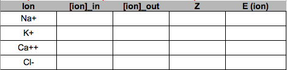
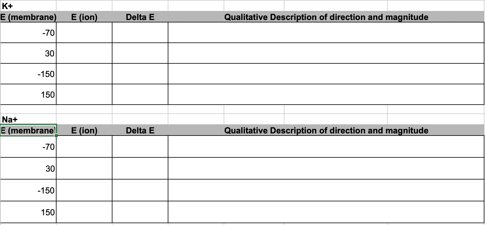

Problem Set 2 Nernst Potential
Goals: quantitative thinking, spreadsheet best practices
2.1 Electrical potentials
Diffusion of an ion across a membrane differs from that of an electrically neutral chemical such as glucose because the dynamics of ion diffusion is driven by both a chemical gradient and an electrical gradient. The chemical gradient is due to a difference in the concentration of the chemical on either side of the membrane. The electrical gradient is a due to a difference in charge across the membrane. This difference in charge is largely due to differences in the concentration of electrolytes (especially Na+, K+, Cl-, Ca++) on either side of the membrane. The difference in charge gives rise to an electrical potential across the membrane, known as the membrane potential. The units of the membrane potential is milivolts (mV). If the inside of a membrane has more negative and fewer positive charges relative to the outside of the membrane we say the membrane potential is negative (so the sign of the potential is arbitrarily assigned as the inside relative to outside).
A cell can regulate its membrane potential by making the membrane more or less permeable to ions, which changes the distribution of charges on either side of a membrane. The membrane potential in a resting neuron (when it is not conducting a current) is called the resting membrane potential or simply “resting potential”. The resting potential is an equilibrium potential in the sense that there is no net transport of charge. A neuron has a resting membrane potential of around -70 mV, meaning that the inside of the membrane has more negative and fewer positive charges relative to the outside.
When the membrane potential is negative, the electrical gradient for a cation is directed “into” (this is the “downhill” direction). This makes sense, the positively charged cations are attracted to the inside (notice that there is no sense of attraction and repulsion in diffusion of electrically neutral chemicals). By contrast, the electrical gradient for an ion is directed “out of” the cell – anions are attracted to the more positively charged outside of the membrane. The magnitude of the electrical gradient is proportional to the membrane potential.
Why “potential”? A potential is a difference in potential energy over some space. A chemical gradient is a chemical potential. An electrical gradient is an electrical potential, and an electrochemica gradient is an electrochemical potential. A potential can be used to power (provide the energy for) something such as rotating a turbine or lighting a light bulb. The chemical potential of Na+ is used to transport molecules such as glucose up their chemical gradient. The membrane potential is used for numerous cell functions such as generating a current that runs down the membrane of neuron or muscle cell.
2.2 The Nernst potential
For an ion, the chemical and electrical gradients add together to create an electrochemical gradient, or electrochemical potential. The rate of diffusion of an ion is proportional to its electrochemical gradient and this gradient is the difference between the membrane potential and the ion’s equilibrium potential. The equilibrium potential of an ion is the membrane potential at which there is no net transport (diffusion) of the ion across the membrane (despite the membrane being permeable to the ion). There is no net transport - that is, the ion is at equilibrium, because the ion’s electrical and chemical gradients are equal in magnitude but opposite in direction. The equilibrium potential for an ion is the ion’s Nernst potential.
The Equilibrium (Nernst) potential of an ion is
\[\begin{equation} E_{ion} = \frac{62 \mathrm{mV}}{Z} \mathrm{log}_{10} \frac{[\mathrm{ion}]_{\mathrm{out}}}{[\mathrm{ion}]_{\mathrm{in}}} \end{equation}\]where \(Z\) is the valence of the ion.
| Ion | Intracellular concentration | Extracellular concentration |
|---|---|---|
| Sodium (Na+) | 15 mM | 145 mM |
| Potassium (K+) | 150 mM | 4 mM |
| Calcium (Ca2+) | 70 nM | 2 mM |
| Hydrogen ion (proton, H+) | 63 nM (pH 7.2) | 40 nM (pH 7.4) |
| Magnesium (Mg2+) | 0.5 mM | 1 mM |
| Chloride (Cl−) | 10 mM | 110 mM |
| Bicarbonate (HCO3−) | 15 mM | 24 mM |
2.3 Electrochemical potential
If the membrane potential is not at an ion’s equilibrium potential, there will be diffusion of the ion down it’s electrochemical gradient if the membrane is permeable to the ion. This electrochemical potential of an ion is
\[\begin{equation} \Delta E_{ion} = E_{membrane} - E_{ion} \end{equation}\]The greek letter \(\Delta\) (“delta”) is often used in math and science for “difference”. For a cell membrane, the direction of a negative \(\Delta E_{ion}\) is into the cell and the direction of a positive \(\Delta E_{ion}\) is out of the cell. Sometimes \(\Delta E_{ion}\) is called the “driving force” but a phrase like the electrochemical potential “drives” Na+ into the cell can lead to the misconception that all Na+ ions are moving into the cell. This is diffusion and diffusion is the net transport.
2.4 Problem Set
- Use the table of ion concentrations above to compute the Nernst potential for the ions Na+, K+, Ca++, and Cl-. Set up the table in google sheets to look like this:

- Use your computations of equilibrium coefficients for Na+ and K+ to compute the electrochemical difference (“driving force”) of each ion at different membrane potentials. Describe the consequence on the initial rate and direction of diffusion of the ion using something like “fast and into the cell”. Set up the table in google sheets to look like this
